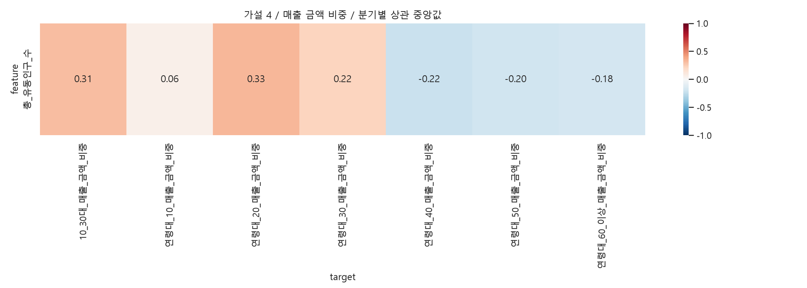
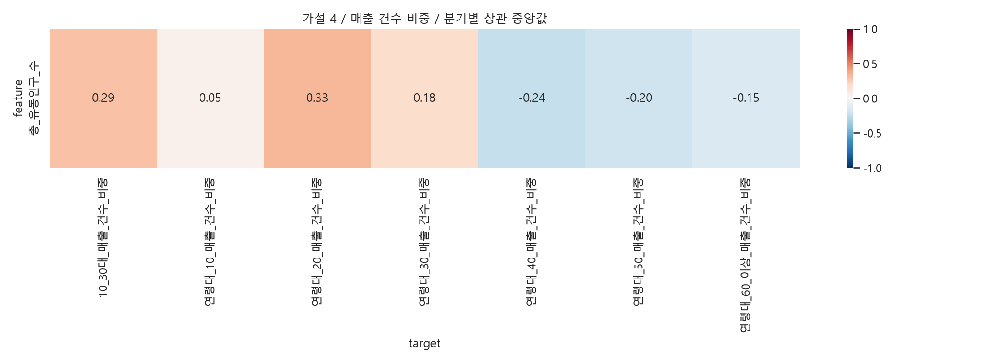

행정동·외식업 매출, 같은 분기의 지역 간 Spearman 탐색 분석입니다. 연령 확인 매출 합계를 분모로 금액·건수 비중을 각각 계산합니다. 건수는 고유 고객 수가 아닙니다. 비중은 합계 제약으로 서로 독립이 아니며 면적·상권규모·공간 의존성은 미통제입니다. 결측은 0으로 채우지 않고 쌍별 제외합니다. rho 중앙값은 통합 상관계수가 아닙니다. |중앙값|≥0.3, 방향 일치≥80%는 요약용 기준이지 통계적 가설 채택 기준이 아닙니다.
젊은 층=10·20·30대 합산 매출비중으로 정의합니다. 유동인구와 이 비중의 양의 관계가 가설 예상 방향입니다. 고유 방문자 수나 평균 나이의 직접 측정은 아닙니다.
| feature | target | median_rho | min_rho | max_rho | quarters | min_n | max_n | positive | negative | direction_consistency | exploratory_candidate |
|---|---|---|---|---|---|---|---|---|---|---|---|
| 총_유동인구_수 | 10_30대_매출_건수_비중 | 0.292442 | 0.238235 | 0.317961 | 20 | 424 | 425 | 1.0 | 0.0 | 1.0 | False |
총_유동인구_수: 뚜렷한 근거 부족. 이는 설명용 탐색 판단이며 인과 검증이 아닙니다.


| feature | target | median_rho | min_rho | max_rho | quarters | min_n | max_n | positive | negative | direction_consistency | exploratory_candidate |
|---|---|---|---|---|---|---|---|---|---|---|---|
| 총_유동인구_수 | 연령대_20_매출_건수_비중 | 0.332637 | 0.297784 | 0.362079 | 20 | 424 | 425 | 1.0 | 0.0 | 1.0 | True |
| 총_유동인구_수 | 연령대_20_매출_금액_비중 | 0.329125 | 0.269129 | 0.354841 | 20 | 424 | 425 | 1.0 | 0.0 | 1.0 | True |
| 총_유동인구_수 | 10_30대_매출_금액_비중 | 0.305483 | 0.233337 | 0.332264 | 20 | 424 | 425 | 1.0 | 0.0 | 1.0 | True |
| 총_유동인구_수 | 10_30대_매출_건수_비중 | 0.292442 | 0.238235 | 0.317961 | 20 | 424 | 425 | 1.0 | 0.0 | 1.0 | False |
| 총_유동인구_수 | 연령대_40_매출_건수_비중 | -0.238107 | -0.279190 | -0.184153 | 20 | 424 | 425 | 0.0 | 1.0 | 1.0 | False |
| 총_유동인구_수 | 연령대_30_매출_금액_비중 | 0.224604 | 0.128189 | 0.260539 | 20 | 424 | 425 | 1.0 | 0.0 | 1.0 | False |
| 총_유동인구_수 | 연령대_40_매출_금액_비중 | -0.222378 | -0.251987 | -0.141071 | 20 | 424 | 425 | 0.0 | 1.0 | 1.0 | False |
| 총_유동인구_수 | 연령대_50_매출_건수_비중 | -0.204112 | -0.230492 | -0.150865 | 20 | 424 | 425 | 0.0 | 1.0 | 1.0 | False |
| 총_유동인구_수 | 연령대_50_매출_금액_비중 | -0.196504 | -0.242182 | -0.142349 | 20 | 424 | 425 | 0.0 | 1.0 | 1.0 | False |
| 총_유동인구_수 | 연령대_60_이상_매출_금액_비중 | -0.184437 | -0.231476 | -0.083929 | 20 | 424 | 425 | 0.0 | 1.0 | 1.0 | False |
| 총_유동인구_수 | 연령대_30_매출_건수_비중 | 0.176305 | 0.063992 | 0.228982 | 20 | 424 | 425 | 1.0 | 0.0 | 1.0 | False |
| 총_유동인구_수 | 연령대_60_이상_매출_건수_비중 | -0.153271 | -0.180488 | -0.082379 | 20 | 424 | 425 | 0.0 | 1.0 | 1.0 | False |
| 총_유동인구_수 | 연령대_10_매출_금액_비중 | 0.061220 | 0.021402 | 0.119906 | 20 | 424 | 425 | 1.0 | 0.0 | 1.0 | False |
| 총_유동인구_수 | 연령대_10_매출_건수_비중 | 0.047354 | 0.027433 | 0.122174 | 20 | 424 | 425 | 1.0 | 0.0 | 1.0 | False |